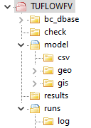

Section 3 Getting Started
3.1 How to Build Your First Model
TUFLOW FV includes a wide range of self-education resources to aid new users learning the software. Available options include online tutorials, example models, demonstration models and eLearning modules. All models included or constructed when completing these self-education options have been designed using a licence-free mode. As such, there is no need to purchase a software licence to learn TUFLOW FV.
All TUFLOW FV self-education resources are fully supported via the TUFLOW Support Services, therefore, should you have any questions while working through these self-education resources, please don’t hesitate to contact support@tuflow.com.
As an alternative to self-education, if you wish to learn TUFLOW FV under the guided instruction of a TUFLOW expert, paid online and in-person training classes are also available. For further information on paid training options please contact training@tuflow.com.
3.1.1 Tutorial Models
A number of free Tutorial Models are available for download and are documented in the TUFLOW FV Tutorial Introduction Wiki Page. Current tutorials include:
- Module 1 - Trapezoidal Channel
- Module 2 - Riverine Channel
- Module 3 - Coastal Application
- Module 4 - Floodplain Application
- Module 5 - 3D Estuary Application
- Module 6 - Particle Tracking
- Module 7 - Sediment Transport
- Module 8 - SWAN GIS Tools
- Module 9 - Water Quality
The tutorials start with introductory concepts and progressively add complexity. Therefore it is recommended to complete the tutorials in order from one through nine.
The tutorials have been created using QGIS as the model development environment.
3.1.2 Example Models
Free Example Models are documented and are available for download via the TUFLOW FV Wiki. The example model dataset includes over 50 standalone models demonstrating the most commonly used TUFLOW features. This education resource is intended for experienced modellers wishing to further develop their skills following completion of the Tutorial Models. Unlike the tutorials, this dataset does not include step-by-step instructions. Users of this dataset are expected to have a basic knowledge TUFLOW, and have suitable skills to open the model files by referencing the TUFLOW FV Control File (FVC) referenced in the example model catalogue list. The catalogue list on the TUFLOW FV Wiki
3.1.3 Licence Free Demo Mode
MJS fix Demo model link Setting
- The total number of 2D cells may not exceed 5,000 – this is the number of cells within the mesh.
- The total number of 1D channels may not exceed 100.
- There is only one (1) 2D domain.
- Simulation clock time cannot exceed 10 minutes.
- The model cannot use restart files.
3.1.4 Instructor Led TUFLOW Training Courses
As an alternative to self-education, if you wish to learn TUFLOW under the guided instruction of a TUFLOW expert, paid online and in-person training classes are also available. For further information on paid training options please contact training@tuflow.com.
3.2 The TUFLOW Modelling Concept
The fundamental software necessary for building a TUFLOW model and viewing simulation results are:
- Text editor. Used to create and edit TUFLOW simulation control files. The control files list all the simulation commands and file path references to the above mentioned GIS and tabular datasets.
- Spreadsheet software. Used for time-series and other non-geographically located data.
- GIS software. Used to create, modify and manage all geographic inputs and to view simulation results.
- Mesh generator. Used to create the computational flexible mesh topology.
Figure 3.1: TUFLOW Modelling Concept
Annual user survey results from the past five years indicate that the majority of TUFLOW FV modellers globally use the text editor / spreadsheet / GIS / SMS working environment approach. Within that framework, the most popular supporting software combination is Notepad++, Excel, QGIS (with the free QGIS TUFLOW Plugin) and SMS. Due to the dominant usage of these supporting software, detailed information for Notepad++, QGIS and SMS is provided in Sections 3.2.1, 3.2.2 and 3.2.3. Please note, modellers are not required to use Notepad++, Excel, QGIS and SMS. Other alternative supporting software may be used instead. A complete list of commonly used options is outlined in Table 3.1. \(\newcommand{\blockindent}{\hspace{0.5cm}}\)
| Software Type | Suggested Software |
|---|---|
| Text Editor |
UltraEdit / TUFLOW FV Wiki UltraEdit Tips Notepad++ / TUFLOW FV Wiki Notepad++ Tips Visual Studio Code / TUFLOW FV Wiki Visual Studio Code Tips Other: Any text editor can be used for creating TUFLOW control files, including the Microsoft Windows default, Notepad. However, the above listed editors are recommended. They allow for advanced options, such as syntax highlighting of TUFLOW control files and launching TUFLOW simulations from the text editor. |
| Spreadsheet Software |
Microsoft Excel / TUFLOW FV Wiki Excel Tips Libre Office |
| GIS Platforms |
QGIS (TUFLOW Wiki QGIS Tips) with QGIS TUFLOW Plugin. The QGIS TUFLOW Plugin provides a range of pre- and post- processing tools, and dynamic viewing of 1D and 2D results in TUFLOW Viewer. ArcGIS Pro (TUFLOW Wiki ArcGIS Tips) with Spatial Analyst for the creation of model inputs and viewing of static results. Dynamic viewing of 1D and 2D results is not available in ArcGIS. MapInfo Professional (TUFLOW Wiki MapInfo Tips) for the creation of model inputs and viewing of static results. Dynamic viewing of 1D and 2D results is not available in ArcGIS or MapInfo. QGIS (TUFLOW Wiki QGIS Tips), SMS (TUFLOW Wiki SMS Tips) or WaterRIDE are recommended to address these limitations. |
| Mesh Generators | GIS Mesher (TUFLOW FV Wiki GIS Mesher) |
| Other Software |
Python (TUFLOW FV Python Toolbox) MATLAB (TUFLOW FV MATLAB Toolbox) |
For modellers preferring to work predominantly within a Graphical User Interface (GUI) environment instead of GIS, the following TUFLOW GUI options are also available:
3.2.1 Notepad++
Notepad++ is a free text editor available from https://notepad-plus-plus.org/downloads/. The Notepad++ functionality listed below makes it well suited as an editor for creating and updating TUFLOW control files. Click on the respective links in each bullet point for more information:
- Syntax Highlighting: Colour coding of TUFLOW control files, shown in Figure 3.2.
- Simulation Execution: The ability to start a TUFLOW FV simulation directly from Notepad++.
- File Navigation: The ability to open files based on the relative reference provided in a TUFLOW control file. For example an water quality control file (.fvwq) can be opened directly from the TUFLOW FV control file (.fvc) without having to locate it in Windows Explorer.
Figure 3.2: NotePad++ TUFLOW Syntax Highlighting
3.2.2 QGIS / TUFLOW Viewer
QGIS is free, open source GIS software available from https://www.qgis.org/. It is an official project of the Open Source Geospatial Foundation (OSGeo). It runs on Linux, Unix, Mac OSX, Windows and Android and supports numerous vector, raster, and database formats and related functionalities.
MJS need to update, or create video content… If you wish to use QGIS as your model development or result viewing environment, we strongly recommend completing our free Introduction to QGIS for TUFLOW eLearning. It teaches how to configure QGIS for TUFLOW modelling and provides an entry level overview on how to use the software.
We also recommend installing the free QGIS TUFLOW Plugin. The QGIS TUFLOW Plugin includes a suite of tools built to increase TUFLOW workflow efficiency. Installation and use instructions are provided in the QGIS Tips and Tricks section of the TUFLOW Wiki.
TUFLOW Viewer is included in the QGIS TUFLOW Plugin. As the name suggests, TUFLOW Viewer upgrades the QGIS Map Window to become a complete dynamic interactive TUFLOW simulation result viewer. This addition to QGIS makes the the programme’s functionality comparable to commercial GUI software. Documentation of the TUFLOW Viewer is located on the TUFLOW Wiki.
Figure 3.3: QGIS with TUFLOW Viewer
3.2.3 Aquaveo SMS Mesh Generator / TUFLOW FV Graphical User Interface
This section provides a brief introduction to the SMS software, for more information please see the Aquaveo Website, SMS Wiki, the Aquaveo Learning Centre and the TUFLOW FV Wiki SMS Tips.
There are three versions of SMS available for use with TUFLOW FV:
SMS Community Edition: A free version suitable for mesh generation and result viewing. This is the version used within the TUFLOW FV Wiki Tutorial Models.
SMS Riverine Pro Version: A paid licence version suitable for advanced TUFLOW FV meshing, result viewing and analysis.
SMS TUFLOW FV Dynamic Model Interface : A paid licence version. Includes a full GUI environment for building TUFLOW FV 2D hydrodynamic models. It is suitable for building TUFLOW FV models within SMS, advanced mesh meshing, viewing and analysis of TUFLOW FV results.
MJS Add Figure of DMI…
3.3 Installing and Running TUFLOW
3.3.1 TUFLOW FV Downloads and Installation
TUFLOW FV does not require an installer, but instead simply requires the user to copy or unzip the downloaded files into a folder. This approach allows the modeller to have as many releases or versions of TUFLOW FV available as required. This is beneficial, as there is often a need to run or re-run legacy models using older TUFLOW FV versions. The current TUFLOW release version, manual and release notes are available via the TUFLOW website Downloads page. All past TUFLOW FV versions are available from the Downloads Archive.
Section 12.4.1 provides more information on downloading and installing TUFLOW FV. Detailed step-by-step instructions for new users are also provided on the TUFLOW FV Wiki.
3.3.2 Licencing
A TUFLOW FV licence is required to run TUFLOW FV, but is not required when using third-party software such as a GIS, text editor or GUI (for further information refer to Section 12.5.1 and/or to the installation instructions on the TUFLOW FV Wiki). Licences are hosted on hardware locks (e.g. USB lock) or software locks (e.g. via a configuration file housed on a particular computer, server or cloud virtual machine). Email sales@tuflow.com for a quote to purchase a TUFLOW FV licence.
TUFLOW FV can be used licence free for the TUFLOW FV Tutorials, Example models or when running TUFLOW FV using Demo Mode (see Section 3.2).
For third-party USB locks that have TUFLOW FV licences, please refer to the vendor’s documentation for configuring the licence.
3.3.3 Performing Simulations
TUFLOW simulations are started by running the TUFLOW executable and passing the input TUFLOW FV control file (.fvc). There are a number of ways of initiating simulations:
- Running a batch file. Batch files can be used to run single TUFLOW FV simulations but also can be set up to loop through events and scenarios to run a multitude of simulations or to push simulations to different processors.
- From the text editor – ideal for one off simulations, especially whilst constructing a model.
- Directly from GIS software.
- Using Microsoft Explorer to right click and run.
- Via a GUI, such as the SMS TUFLOW FV Interface.
- From a Command (Console) Window.
Detailed descriptions on running TUFLOW from the above methods are provided on the TUFLOW FV Wiki.
3.4 Folders, File Types and File Naming
3.4.1 Folder Structure
Table 3.2 presents the recommended set of sub-folders to be set up for a TUFLOW FV model. Any folder structure may be used; however, it is strongly recommended that a system similar to that below be adopted. For large modelling jobs with many scenarios and simulations, a more complex folder structure may be warranted, though should be based on that shown below.

| Sub-Folder | Description |
|---|---|
| bc_dbase | Boundary and initial conditions, often with additional sub-folders for specific boundary condition types (e.g. tide, flow, meteorology, etc.). |
| check | If the Write Check Files == command is included in the .fvc check files will be output from TUFLOW FV. These are a series of output files in both GIS (MapInfo or Shapefile format) and tabular data in .CSV format. These check files contain information on the data processed by TUFLOW FV. |
| exe | Optional sub-folder, placing the tuflowfv.exe (and associated dlls) within the TUFLOW FV folder structure may be desired. Alternatively, the tuflowfv.exe is located elsewhere on the network or local computer. |
| model | Include files and the geo, grid, csv and gis sub-folders. External turbulence nml file. |
| model\csv | Location for csv inputs such as culvert and structure files, and z-layer geometry etc. |
| model\geo | Model mesh development often with additional sub-folders or links to locations where mesh development data is located if required. Model mesh development often with additional sub-folders or links to locations where mesh development data is located if required. Location for cell elevation files, topographic/bathymetric DEM files and TINs. |
| model\gis | GIS layers that are inputs to the model domain. |
| model\\empty | Empty template GIS files. |
| runs | TUFLOW FV simulation control files. Batch files are also stored here when performing multiple simulations in a series. |
Table 3.3 shows the recommended structure for more advanced simuations that use the TUFLOW FV Sediment Transport, Water Quality, or Particle Tracking Modules.

| Sub-Folder | Description |
|---|---|
| bc_dbase | Boundary and initial conditions, often with additional sub-folders for specific boundary condition types (e.g. tide, flow, meteorology, etc.). |
| check | If the Write Check Files == command is included in the .fvc check files will be output from TUFLOW FV. These are a series of output files in both GIS (MapInfo or Shapefile format) and tabular data in .CSV format. These check files contain information on the data processed by TUFLOW FV. |
| exe | Optional sub-folder, placing the tuflowfv.exe (and associated dlls) within the TUFLOW FV folder structure may be desired. Alternatively, the tuflowfv.exe is located elsewhere on the network or local computer. |
| model | Include files and the geo, grid, csv and gis sub-folders. External turbulence nml file. |
| model\csv | Location for csv inputs such as culvert and structure files, and z-layer geometry etc. |
| model\geo | Model mesh development often with additional sub-folders or links to locations where mesh development data is located if required. Location for cell elevation files, topographic/bathymetric DEM files and TINs. |
| model\gis | GIS layers that are inputs to the model domain. |
| model\\empty | Empty template GIS files. |
| runs | TUFLOW FV simulation control files. Batch files are also stored here when performing multiple simulations in a series. |
| stm | Sediment control files. |
| wqm | Water quality control files. |
| ptm | Particle tracking control files. |
Note:
- Files can be located relative to the file they are referred from. For example, the path and filename of a file referred to in a .fvwq file is sourced relative to the .fvwq file (not the .fvc file). See also Section 4.2.2 for a discussion on absolute and relative file paths. MJS check this. Pretty sure all relative to fvc.
- Whilst TUFLOW FV readily accepts spaces and special characters (such as ! or #) in filenames and paths, other software may have issues with these. It is therefore recommended that spaces and other special characters not be used in the simulation path and filename without prior testing.
- Filenames and extensions are not case sensitive in any TUFLOW FV control files. Got to here…
3.4.2 File Types
The most common file types and their extensions are listed in Table 3.5. These files are classified into the following use categories:
- Control Files: used for directing inputs to the simulation and setting parameters. The style of input is very simple, free form commands, similar to writing down a series of instructions. This offers the most flexible and efficient system for experienced modellers. It is also easy for inexperienced users to learn.
- Data Input Files: primarily GIS layers defining the spatial inputs and comma-delimited files generated using spreadsheet software for tabular data, such as boundary condition time-series entries.
- Data Output Files: containing the 1D, 2D and 3D simulation results.
- Check Files: are produced at the beginning of a TUFLOW FV simulation so modellers and reviewers can readily check that the constructed model is as intended. Advanced models draw upon a wide variety of data sources. The check files represent the final model dataset which is used for the simulation calculations. For more details, see the TUFLOW FV Check Files section of the TUFLOW FV Wiki.
| File | Extension | Description | Use Category | Format |
|---|---|---|---|---|
| TUFLOW FV Simulation Control File | .fvc | Primary control file for TUFLOW FV. Controls the data input and output for a 2D or 3D simulation with optional 1D hydraulic structures. Also used as the extension for model include files. | Control File | Text |
| TUFLOW FV Sediment Control File | .fvsed | Sediment definition. Sediment fraction definition, morphological coupling, bank slumping, bed layers,mixing, erosion, deposition and bed load models. | Control File | Text |
| TUFLOW FV Water Quality Control File | .fvwq | Water quality configuration file. Water quality constituent definition and model selection. | Control File | Text |
| TUFLOW FV Particle Tracking Control File | .fvptm | Particle tracking definition. Particle group assignment, mixing, motility, and erosion/deposition characteristics. | Control File | Text |
| TUFLOW Event File | .tef | Database of fvc commands for different events. | Control File | Text |
| File | Extension | Description | Use Category | Format |
|---|---|---|---|---|
| TUFLOW FV Restart File | .rst | A snapshot of 2D/3D domain computational results at an instant in time, used for hot-restart of simulations. Written to the model log directory. |
Input File Output File |
Binary |
| TUFLOW FV Bed Restart File | _bed.rst | A snapshot of 2D/3D domain computational results at an instant in time, used for hot-restart of simulations. Written to the model log directory. |
Input File Output File |
Binary |
| TUFLOW FV Particle Restart File | _ptm.rst | A snapshot of sediment composition in the bed and bed layers of a sediment transport simulatoin at an instant in time, used for hot-restart of simulations. Written to the model log directory. |
Input File Output File |
Binary |
| TUFLOW FV Turbulence Restart File | _turb.rst | A snapshot of 2D/3D domain computational turbulence results at an instant in time, used for hot-restart of simulations when an external turbulence model is activated. Written to the model log directory. |
Input File Output File |
Binary |
| Comma Delimited Files | .csv | These files are used for boundary condition tables, hydraulic structure definition, 3D layer faces, cell elevation files, stability diagnostic outputs and other tabulated text inputs. They are opened and saved using spreadsheet software such as Microsoft Excel. |
Input File Output File Check File |
Text |
| ArcGIS Shapefile Layers |
.shp .dbf .shx .prj |
ArcGIS’s industry standard for GIS layers. The .shp file contains information on the GIS objects coordinates. The .dbf file contains the attribute data information associated with the objects. Refer to the .tcf command |
Input File Output File Check File |
Binary |
| MapInfo MIF/MID Files |
.mif .mid |
MapInfo’s industry standard GIS data exchange format. The .mif file contains the attribute data definitions and the geographic data of the objects. The .mid file contains the attribute data. The .mid files are of similar format to .csv files, so they can be opened by Excel or other spreadsheet software. The files are text based and can be scripted by advanced users. |
Input File Output File Check File |
Text |
| QGIS Workspace | .qgs | Check file written to the log directory. A QGIS workspace file that contains the input and output GIS layers used by a simulation. | Output File | Text |
| Mapinfo Workspace | .wor | Check file written to the log directory. A Mapinfo workspace file that contains the input and output GIS layers used by a simulation. | Output File | Text |
| ESRI Ascii raster grid | .asc | Gridded data in the widely used ESRI Ascii grid format. This can be read in the majority of GIS platforms including ArcMap, QGIS and MapInfo. |
Input File Output File Check File |
Text |
| Binary Float Grid | .flt | Gridded data in the binary versions of the .asc format (see above). This data is recognised by most GIS packages and is much faster to read/write than the .asc format. |
Input File Output File Check File |
Binary |
| NetCDF | .nc |
Input: These files are typically used to store data inputs that vary spatially and temporally. These inputs are often derived from outputs from other models and may include wind fields, atmospheric conditions, short-wave forcing or ocean current forcing. Output: The recommended file output format for TUFLOW FV. Supports 2D and 3D map output. Ability to view raw cell centre, or vertex interpolated results. Fully compatible with the TUFLOW Viewer Plugin for QGIS. |
Input File Output File |
Binary |
| SMS Super File | .sup | SMS super file containing the various files and other commands that make up the output from a single simulation. Opening this file in SMS opens the .2dm file and the primary .xmdf file. | Output File | Text |
| SMS Mesh File | .2dm | Flexible mesh topology definition. | Output File | Text |
| SMS Data File | .dat |
SMS generic formatted simulation results file. TUFLOW output is written using the .dat format. See Table 9‑10 and |
Output File | Binary |
| SMS XMDF File | .xmdf |
An alternative to using the .dat files described above. .xmdf files are much faster to access and can contain all TUFLOW map output within a single file (rather than one file per output type as for the .dat format). See Table 9‑10, Table 9‑11 and |
Output File | Binary |
| TUFLOW FV Log File | .log | A log file containing information about the 1D/2D/3D data input process and a log of the simulation. | Check File | Text |
3.4.3 Naming Conventions
As the bulk of the data input is via GIS data layers, efficient management of these datasets is essential. For detailed modelling investigations, the number of TUFLOW GIS data layers has been known to reach over a hundred for large complex models, although the majority of models would utilise five to twenty layers. Good data management also caters for the many other GIS layers being used (aerial photos, cadastre, etc.).
Different TUFLOW FV input files require different GIS attributes, for
example a material definition file only requires a single
attribute (with the attribute – Mat), whereas, a nodestring polyline layer
has a greater number of attributes (Name, boundary snapping etc.).
Each of these file types is described in Table
3.6. It is strongly
recommended that the prefixes described in Table
3.6 be adhered to for all GIS layers. This greatly enhances the data management efficiency and,
importantly, makes it much easier for another modeller or reviewer to
quickly interpret the model. The .fvc command
Data input is structured so that there is no limit on the number of data sources. Commands can be repeated indefinitely in the text files to build a model from a variety of sources. For example, a model’s topography may be built from more than one source. A DTM may be used to define the general topography, updated with locallised survey data, while several 3D elevation lines (breaklines) define the crests of levees or roads. The sequential approach to reading datasets offers unlimited flexibility and increased efficiency. This layered approach also offers good traceability and quality control.
Refer also to Section 12.2 and 12.3 which provide further guidance on model naming conventions and methods in which the same control files may be used to simulate multiple flood events and scenarios, thereby reducing the potential number of files created.
| Suggested File Prefix | GIS Data Type | Description | Refer to Section |
|---|---|---|---|
| 2d_mat_ | 2D Land-Use (Materials) Categories | Layers to define or change the land-use (material) types on a cell-by-cell basis. | XX |
| 3d_po_ | 2D Plot (Time-Series) Output Locations | Layer(s) defining the locations and types of time-series output from the 2D domains. | XX |
| 2d_sa_ | 2D Source over Area | Layer(s) defining cell inflow locations. GIS objects with point geometery apply flow to the cell they reside in. GIS objects with polygon geometry will select cells with cell centroids that reside within the polygon boundary. | XX |
|
2d_zln_ (2d_zlr_) (2d_zlg_) |
2D Elevation Lines |
Optional 2D or 3D breaklines defining the crest of ridges (e.g. levees, embankments) or thalweg of gullies (e.g. drains, creeks). Ridges and gullies cannot occur in the same layer so 2d_zlr_ is often used for ridges and 2d_zlg_ for gullies. These files are typically created by renaming the 2d_z__empty file. |
XX |
| 2d_ns_ | Nodestring Lines | Layers to define the spatial location of boundary conditions, hydraulic struture 1D/2D connections and flux reporting. | XX |
| 2d_zn_ | Zone Polygons | Layers to define 1D/2D hydraulic structure connections when using Linked Zone structure types. | XX |
3.5 Tips and Tricks
The TUFLOW FV Wiki is the primary location where the TUFLOW software team share useful modelling tips and tricks. The Wiki covers an extremely wide range of subjects. A list of the main subject matter topics are summarised in Table 3.7.
New content is added to the Wiki regularly. If you would like to be informed of updates when they are published, please join the LinkedIn TUFLOW User Group.
| Tips and Tricks (Link) | Description |
|---|---|
| Licencing Tips | A TUFLOW licence is required to run TUFLOW. This section of the Wiki outlines the user steps required to request and import licence updates. |
| Self-teach Tutorial Modules | All TUFLOW self-education resources function using a licence-free mode. As such, there is no need to purchase a software licence to learn TUFLOW. User documentation for the Self-teach Tutorial Modules are hosted on the Wiki. |
| Supporting Software Tips | User tips for the following support software: Excel, Notepad ++, UltraEdit, Visual Studio Code, QGIS, SMS. |
| TUFLOW Viewer User Manual |
TUFLOW Viewer is a free 1D and 2D dynamic result viewing interface included in the QGIS TUFLOW Plugin. It enable QGIS with added functionality, upgrading the GIS software with feature akin to traditional Graphic User Interface software. This plugin is extremely popular, at the time of writing (January 2023) it has achieved a 5 star rating after 48,000 downloads!
|
| TUFLOW Utilities | The TUFLOW Utilities are a set of tools that have been developed to help users convert input data from one format to another for use in a TUFLOW model, or to post-process simulation results. |
| Hardware Selection Advide | This Wiki page outlines useful guidance for modellers who are purchasing computer hardware for TUFLOW modelling. |
| GIS Software TUFLOW Plugins (ArcGIS, ArcPro, MapInfo and QGIS) | TUFLOW seamlessly integrates with GIS software. Any GIS or Computer Aided Design (CAD) package can be used provided load or import and save or export option are available for the GIS formats TUFLOW currently supports (refer to ). The most commonly used GIS software are ArcGIS, ArcPro, MapInfo and QGIS. Due to their widespread use, customised toolkits and plugins have been specifically designed for these GIS packages to improve TUFLOW model build and result viewing workflow efficiency. |
| GitLab TUFLOW User Group | The open file formats used by TUFLOW for its input and output make it well suited to automation via scripting as a means to improve workflow efficiency. Many modellers develop their own tools to assist in their use of TUFLOW and to automate many tasks. These tools cover a wide range of use cases, such as data preparation, advanced simulation control, model quality assurance and result post-processing. A GitLab TUFLOW User Group has been established to support the sharing and collaborative development of these tools by the broader TUFLOW community. |
| TUFLOW FV Python Toolbox | The TUFLOW FV Python Toolbox leverages the use of Jupyter Notebooks and Xarray to provide a powerful pre and post processing suite of tools for TUFLOW FV. |
| TUFLOW FV MATLAB Toolbox | The TUFLOW FV MATLAB Toolbox contains a range of useful pre and postprocessing tools for TUFLOW FV. |
| Boundary Condition Get Tools | A component of the TUFLOW FV Python Toolbox. A set of tools to allow download and generation of astronomical tide, atmospheric and ocean circulation boundary conditions for TUFLOW FV. |
| Water Quality Diagnostic Variables | Demonstration highlighting the transparency of mass and energy flux reporting in TUFLOW FV’s Water Quality Module. |

\(\newcommand{\blockindent}{\hspace{0.5cm}}\)